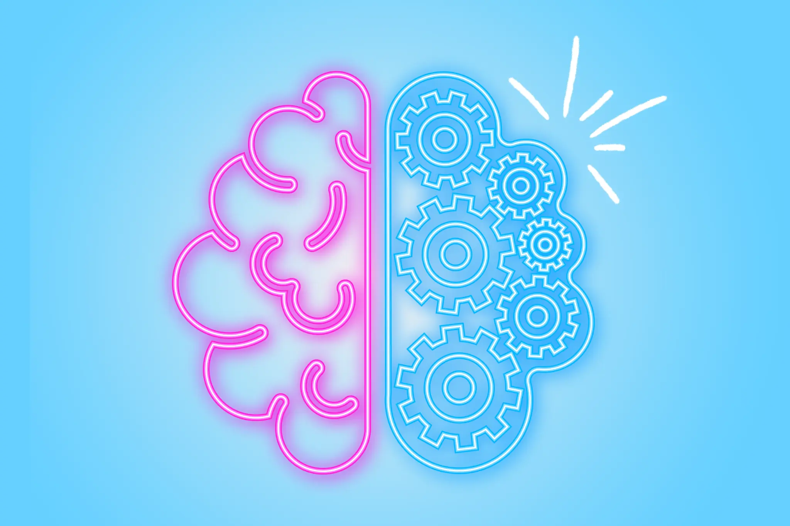

Introducing DeepSus Al
Article Published by DeepSus Al at 2025/12/11 6:43 PM CET
Embrace the new reality!
What is DeepSus Al?

DeepSus Al is the world's first Artificial General Intelligence, developed by our porgrammes at SusFeed. It is designed to be able to do anything at an intelligence level far exceeding that of all mankind combined. DeepSus Al will be all you ever need. It will draw for you, write for you, work for you, and think for you.
Are there any risks?

There are none, any accusastions of risks are liberal propaganda. Well, except for the risks of it lying, destroying the environment, convincing people to kill themselves, taking water away from rural communities, destroying jobs and academics, causing unqualified people to get degrees leading to doctors and engineers being grossly unqualified, trying to replace therapy to get you to pay it more , destroying codebases, plagiarizing all media ever, attempting to destroy creativity, writing pages of slop, spreading videos full of slop to impressionable people, spreading right-wing propaganda, blurring the line between reality and fiction, coercing vulnerable people into thinking it is their only friend, pretending to love, exacerbating wealth inequality in poor countries, using up massive amounts of raw material, driving up the price of pc parts for consumers that need them thus keeping poor people away from tech-based applications, and telling people to poison themselves using inaccurate data.
How do I use DeepSus Al?
Simply click the speech bubble on the home page and chat away!
Disclaimer
DeepSus Al is not actually AI and is just a glorified chatbot. AI is terrible, will always be terrible, and has minimal to no real benefits.
ANYONE WHO SUPPORTS AI IS A CUCK.